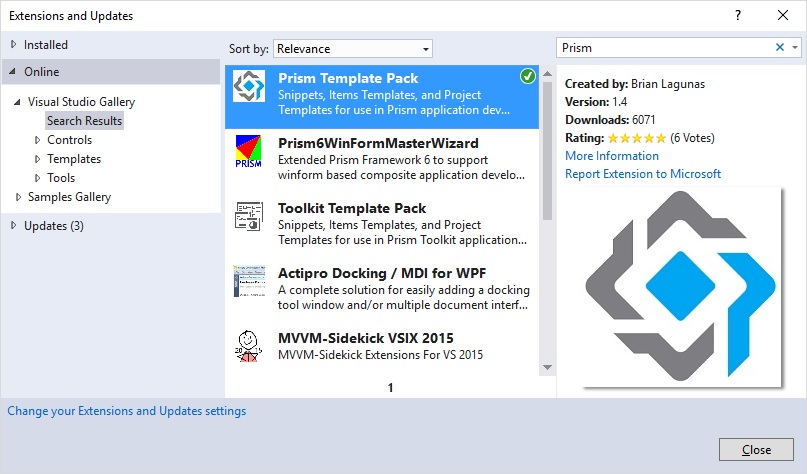
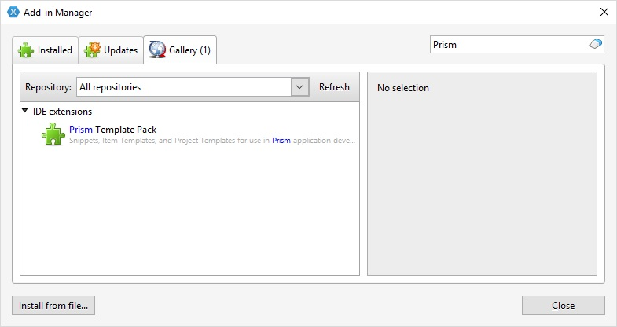

Prism NuGet Packages
The easiest way to start using Prism is install a NuGet Package
Core Packages
These are the base packages for each platform, together with the Prism's Core assembly as a cross-platform PCL.
| Platform | Assembly | Package | Version |
|---|---|---|---|
| PCL | Prism.dll | Prism.Core |  |
| WPF | Prism.Wpf.dll | Prism.Wpf |  |
| Xamarin.Forms | Prism.Forms.dll | Prism.Forms |  |
| Windows 10 UWP | Prism.Windows.dll | Prism.Windows |  |
Container-specific packages
Each supported IoC container has its own package assisting in the setup and usage of that container together with Prism. The assembly is named using this convention: Prism.Container.Platform.dll, e.g. Prism.Unity.Wpf.dll.
Following matrix shows the platform specific support currently available.
| Package | Version | WPF | Win10 UWP | Xamarin.Forms |
|---|---|---|---|---|
| Prism.Unity (*) |  |
X | X | |
| Prism.Unity.Forms |  |
X | ||
| Prism.Mef (**) |  |
X | - | - |
| Prism.Autofac |  |
X | X | |
| Prism.StructureMap |  |
X | ||
| Prism.Ninject |  |
X | X |
(*) As Xamarin Forms also supports UWP now, adding Prism.Unity puts in some incorrect dependencies. Therefore we created a new Prism.Unity.Forms package.
(**) MEF is supported with WPF for compatibility with previous versions. It will not be added to Windows 10 UWP or Xamarin Forms.
Note that adding the container-specific package to your project, will also pull in the correct platform-specific package and the core PCL library. E.g. when you'd like to use Unity in a WPF project, add the Prism.Unity package and the rest will be pulled in as well.
A detailed overview of each assembly per package is available here.
Prism Template Pack
Prism now integrates with Visual Studio and Xamarin Studio to enable a highly productive developer workflow for creating WPF, UWP, and native iOS and Android applications using Xamarin.Forms. Jump start your Prism apps with code snippets, item templates, and project templates for your IDE of choice.
Visual Studio Gallery
The Prism Template Pack is available on the Visual Studio Gallery. To install, just go to Visual Studio -> Tools -> Extensions and Updates... then search for Prism in the online gallery:
Xamarin Studio Addin
Installation is straightforward if you've installed Xamarin Add-ins before, just go to Xamarin Studio -> Add-In Manager... from the Menu and then search for Prism from the Gallery:
